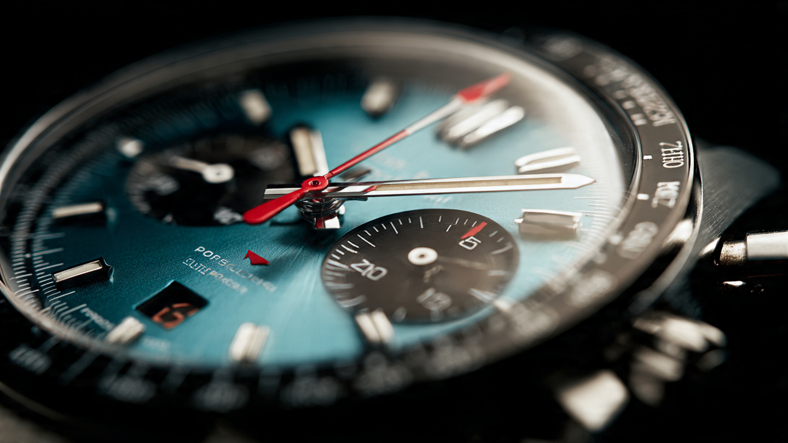

A Third Way to Couple a Chronograph: How Agenhor’s Toothless Clutch Landed in H. Moser’s Most Complicated Watch

Every chronograph ever made faces the same engineering fork in the road: when the wearer presses the start pusher, the movement must connect a dormant set of gears to an already-spinning train, and for more than a century exactly two methods have dominated. Horizontal clutches swing a toothed wheel into mesh with another toothed wheel, and if those teeth do not align perfectly at the moment of contact, you get the visible jerk of the seconds hand, a tiny stammer that high-end watchmaking has spent decades trying to minimize. Vertical clutches stack friction discs on a shared axis so engagement is instantaneous, but that vertical stack adds height and makes the movement thicker. Watchmakers have been choosing between stutter and bulk since the late 19th century, when Edouard Heuer patented the oscillating pinion in 1887 to mitigate exactly this tradeoff. Jean-Marc Wiederrecht chose neither.
A Watchmaker Who Builds Complications for Other People
Wiederrecht left watchmaking school in 1972 and spent his early career fitting movements inside gold coins, a pursuit that forced him to think in fractions of millimeters before that particular obsession became fashionable. By the late 1980s Harry Winston noticed, and Wiederrecht, working alongside the legendary Roger Dubuis, delivered a bi-retrograde perpetual calendar that became Harry Winston's first complicated timepiece. In 1996, Wiederrecht and his wife Catherine founded Agenhor, an acronym for Atelier Genevois d'Horlogerie, and the firm became one of independent watchmaking's most prolific yet least visible suppliers. MB&F's HM2 and HM3 run on Agenhor movements. Van Cleef & Arpels' poetic complications, including the Pont des Amoureux, rely on Wiederrecht mechanisms. The chain-driven Harry Winston Opus 9, which won the design watch prize at the 2009 GPHG, was his work with Eric Giroud. Hermès' Temps Suspendu, a watch that can freeze its own hands on command, is pure Agenhor. Nine GPHG awards span the firm's history, yet the Wiederrecht name rarely appears on a dial.
In 2008, Wiederrecht began developing a chronograph from scratch, driven by the conviction that both traditional coupling methods were compromises rather than solutions. It took nearly a decade. When the finished architecture, called AgenGraphe, debuted in the 2017 Fabergé Visionnaire Chronograph, it carried a clutch mechanism that did not exist in any horological textbook.
Friction Instead of Teeth
Consider what happens inside a conventional horizontal clutch at the moment of engagement: a column wheel rotates to a new position, releasing a spring-loaded lever arm that swings a toothed intermediate wheel into mesh with the chronograph wheel, and because both wheels have precisely machined teeth but are rotating at different speeds, one spinning continuously and one stationary, there is a moment of mechanical negotiation as the teeth find each other, a fraction of a second where the escapement amplitude drops and the chronograph hand stutters before settling into its sweep. Better manufacturing narrows that stutter but does not eliminate it.
Wiederrecht removed the teeth entirely, and his AgenClutch uses smooth wheels with abrasive surfaces that couple by friction alone. When the chronograph starts, one smooth disc simply touches another, and the abrasive coating grips immediately, with no teeth to align, no gap to bridge, no meshing delay, because the connection is continuous across the entire contact surface rather than discrete at individual tooth faces. Monochrome Watches, in their 2017 coverage of the Fabergé Visionnaire, described the principle with admirable understatement: “It sounds simple on paper, yet no one thought about it before.”
There is an obvious objection: teeth interlock, friction can slip, and what happens during a shock event when the watch is jarred and the smooth wheels momentarily lose full contact? Wiederrecht anticipated this by placing a secondary set of conventional toothed wheels behind the primary friction wheels, backed by what Agenhor calls a double tulip spring, a leaf-spring arrangement that allows the toothed backup to absorb impact forces without transmitting those forces to the delicate friction coupling or causing the kind of tooth-on-tooth damage that plagues conventional clutches during accidental impacts. In normal operation, you never feel the backup, because it exists solely as an insurance policy against physics.
What makes the AgenClutch genuinely novel rather than merely clever is its geometric advantage: because the friction coupling operates in the horizontal plane, it adds no vertical height to the movement stack, whereas a vertical clutch chronograph like the Rolex 4130 inside the Daytona achieves stutter-free starts by stacking components on a shared axis, which is mechanically elegant but physically tall, typically adding 1 to 2 mm of movement thickness. Wiederrecht gets the same stutter-free start while keeping everything flat, achieving two qualities that were previously mutually exclusive: thin and stutter-free.
From HMC 902 to HMC 730: Subtraction as Addition
When H. Moser & Cie. launched the Streamliner Flyback Chronograph in 2020, it used the HMC 902, an automatic movement based on the AgenGraphe architecture. That watch won the Chronograph Watch Prize at the Grand Prix d'Horlogerie de Genève, the single most competitive category in the ceremony's annual cycle. MELB, the holding company of the Meylan family that owns H. Moser, subsequently took a stake in Agenhor in 2023, cementing the relationship between brand and movement maker into something closer to a shared workshop than a supplier contract.
For the Endeavour Flyback Chronograph Dual Time Date, Agenhor built the HMC 730 by working backward. They removed the automatic winding system from the HMC 902, stripped the oscillating rotor and its associated transmission gears, and used the freed volume to install three new functions: a second time zone display, a date aperture, and a bi-directional date correction mechanism that allows the date to be set forward or backward without risk to the movement, a genuinely rare feature at this level of complexity. Most complicated watches either prohibit backward date adjustment entirely or restrict it to specific positions in the movement's cycle, and the penalty for ignoring that restriction is usually a broken date jumper spring and a four-figure service bill.
On paper this sounds like a lateral move, removing one thing and adding three, but the engineering is more nuanced than simple arithmetic would suggest. An automatic winding system is not a monolithic block you unbolt and replace. It consists of the rotor mass, the reversing mechanism (typically a pair of click-wheel reducers or a Pellaton-style pawl system), the winding bridge, the rotor bearing, and the transmission train connecting the rotor's bidirectional rotation to the unidirectional winding of the mainspring barrel. Removing all of that creates not just empty volume but a different set of structural constraints, because the bridges and pillars that supported those components now need new roles or elimination, and the movement's vertical center of gravity shifts when you remove the heavy peripheral mass of the rotor. Agenhor did not simply plug complications into vacant real estate. They re-engineered the movement architecture around its new manual-wind identity.
What survived the conversion intact tells you what Agenhor considers non-negotiable: the column wheel chronograph switching mechanism, the AgenClutch, the twin mainspring barrels delivering 72 hours of power reserve, and the retrograde snail cam mechanism that drives the elapsed-minutes hand, which deserves its own section.
Why the Minute Hand Jumps
On most chronographs, the elapsed-minutes counter is a subdial, usually at 3 or 9 o'clock, with a hand that creeps incrementally around a 30- or 60-minute track, and reading it during a timing event means squinting at a tiny hand on a tiny dial, trying to determine whether it is pointing to 7 minutes or 8. Wiederrecht's AgenGraphe architecture eliminated subdials entirely by placing all chronograph hands at the center of the dial, which is the legibility argument that drove the entire project from 2008 onward: if you are using a chronograph, you should be able to read it at a glance without performing subdial archaeology.
But a central elapsed-minutes hand introduces a new problem, because if it sweeps continuously like a conventional counter, the hand's position between minute markers becomes ambiguous at exactly the moment when you need precision, the final seconds before a minute rollover. Is it at 6 minutes and 58 seconds, or 7 minutes and 2 seconds? On a subdial, the small scale compresses ambiguity, but on a full-size central hand sweeping across a 42 mm dial, that ambiguity magnifies into a genuine legibility failure.
Agenhor's solution is a retrograde snail cam, a cam shaped like a logarithmic spiral that accumulates energy from the chronograph train over the course of each minute, storing it as spring tension, and then at the 60-second mark releases that stored energy instantaneously, snapping the minute hand from one marker to the next in a single visible jump. Between jumps, the hand is stationary, sitting precisely on the current minute value, with no creep, no ambiguity, and no need to interpolate where the hand is pointing, because every reading is exact and every position is discrete.
It is worth noting that the snail cam mechanism is not unique to Agenhor. Jaeger-LeCoultre uses a similar principle in the Duomètre Chronograph's foudroyante, and several high-complication pieces from A. Lange & Söhne employ jumping mechanisms driven by cam-stored energy. What Agenhor did differently was integrate the jumping minute into a centrally mounted chronograph display that also carries a flyback function, meaning both the seconds and minutes hands reset and restart simultaneously when the flyback pusher is pressed, with the snail cam re-accumulating energy from the new zero point without any intermediate dead time. Combining a flyback reset with an instantaneous jumping minute at the center of the dial, without subdials, is the specific achievement that makes this architecture distinct. Nobody else does all three simultaneously.
The Watch That Results
All of this engineering lives inside a 42 mm polished stainless steel case measuring 13.2 mm thick. Rectangular chronograph pushers sit at 10 and 2 o'clock, a screw-down crown engraved with the Moser “M” occupies 4 o'clock, and the case is fitted with sapphire crystals on both sides. Water resistance is 30 meters, which is polite watchmaker language for “keep it dry.”
Moser's turquoise fumé dial is genuinely beautiful, a gradated sunburst that darkens toward the edges through a proprietary finishing process applied by hand. At the center sits a Blackor fumé disc, anthracite to black, carrying a white Super-LumiNova arrow that indicates the second time zone. A red central hand tracks elapsed seconds. A rhodium-plated hand marks elapsed minutes against a white track at the dial's periphery, interrupted at 6 o'clock by the date window. A tachymeter scale occupies the black flange. Leaf-shaped hour and minute hands, filled with Super-LumiNova, tell the local time. No logo appears on the dial. Moser has been doing this for years, a deliberate choice to let the design speak without branding, and the brand name appears only on the movement side and the crown.
Through the caseback, the HMC 730's 383 components are visible: anthracite-finished bridges with perlage, the signature Moser double stripes, partially skeletonized architecture revealing the column wheel and twin barrels. A power reserve indicator on the movement side preserves the clean dial. Hodinkee's hands-on impression noted a slightly curved caseback that helps the 42 mm case sit closer to the wrist than its dimensions would suggest, a detail that matters when the watch is 13.2 mm tall and competing for wrist space against integrated-bracelet sport chronographs half as thick.
The grey alligator strap with nubuck finish and turquoise lining is a thoughtful pairing, picking up the central disc's color, but it is also, at $74,400, a steel watch on a leather strap without a deployant clasp. Pin buckle. Signed with the Moser logo. Functional, not luxurious. At this price point, every competitor from Patek Philippe's 5172G to Lange's Datograph comes on a strap with a folding clasp or offers a bracelet option. Moser's choice to stick with a pin buckle is either admirably purist or mildly annoying, depending on your tolerance for fishing a prong through a hole while wearing a watch that costs more than a fully loaded Toyota Camry.
Who Built This and Why It Matters
Independent watchmaking has a structural problem. Movement development costs are enormous, timeframes are measured in years, and production volumes are small enough that amortizing those costs requires either stratospheric retail prices or external revenue from supplying movements to other brands. Agenhor chose the supplier path, building complications for Harry Winston, Fabergé, Hermès, Van Cleef & Arpels, MB&F, Arnold & Son, Singer Reimagined, and Ming before the MELB acquisition created a tighter link with H. Moser. Jean-Marc Wiederrecht's sons, Nicolas and Laurent, now run the company, but the architecture of the AgenGraphe remains their father's work, refined over nearly a decade of development that began in 2008.
The HMC 730 is what happens when that kind of patient, obsessive development meets a brand willing to strip away visual noise. Three complications on the dial. Zero subdials. A clutch mechanism that eliminates the fundamental tradeoff between horizontal and vertical coupling. A retrograde snail cam that makes the minute hand jump with mechanical certainty rather than creep with analog ambiguity. A bi-directional date correction that most manufacturers at this price point simply refuse to engineer because the consequences of a manufacturing defect are too expensive.
Moser will not sell many of these, given that their annual production is measured in the low thousands across all references, and “Very Rare” is the brand's official slogan, which is either self-aware marketing or the most honest thing a luxury company has ever said about its own supply chain. At $74,400, the Endeavour Flyback Chronograph Dual Time Date is not competing on value. A Tudor Black Bay Chrono at $5,475 gives you a column-wheel chronograph with 200 meters of water resistance. An Omega Speedmaster Professional at $7,500 gives you 60 years of continuous production heritage and a NASA flight qualification. For the price of one Moser, you could buy both of those and still have enough left over for a Grand Seiko Spring Drive Chronograph. What none of those watches offer is the specific thing Wiederrecht built: a chronograph coupling that occupies no vertical space, produces no start-up stutter, and protects itself against shock through a secondary toothed backup that engages only when the primary system is overwhelmed. That is the engineering argument, and at $74,400, engineering arguments are all you have.
Sources
- Hodinkee, “Introducing: H. Moser & Cie. Endeavour Flyback Chronograph Dual Time Date,” May 2026, hands-on review with full specifications of the HMC 730 calibre and case architecture.
- Monochrome Watches, “Introducing: H. Moser & Cie. Endeavour Flyback Chronograph Dual Time Date,” May 2026, detailed technical breakdown of the AgenGraphe-derived movement, MELB-Agenhor ownership structure, and micro-tooth clutch system.
- Gear Patrol, “This Minimalist Dress Watch Is Secretly an Ultra-Capable Tool Watch,” May 2026, overview of HMC 730 development from the HMC 902, snail cam mechanism, and dual-barrel construction.
- Hypebeast, “H. Moser & Cie. Endeavour Flyback Chronograph Dual Time Date,” May 2026, complications overview and pricing at $74,400.
- WatchPro, “H. Moser brings minimalism to a dual time chronograph,” May 2026, pusher layout at 2 and 10 o'clock, fumé enamel dial description, CHF 59,000 pricing.
- H. Moser & Cie. official product page, ref. 1730-1200, specifications including 42 mm diameter, 72-hour power reserve, 3 ATM water resistance.
- Time and Tide Watches, Borna Bošnjak, “Agenhor, and the many movements of the Genevan complication masters (Part 1),” December 2022, AgenClutch technical description including tooth-free friction coupling, double tulip spring, shock-absorbing toothed backup, and Agenhor's nine GPHG awards.
- Monochrome Watches, “Introducing: Fabergé Visionnaire Chronograph, with Revolutionary Movement by Agenhor,” March 2017, first public description of the AgenGraphe horizontal friction clutch using smooth abrasive-surface wheels.
- Oracle of Time, Sam Kessler, “How Agenhor Revolutionised the Chronograph for the 21st Century with the AgenGraphe,” 2024, chronological account of Wiederrecht's career, AgenGraphe development timeline from 2008, and modular architecture description.
- Revolution Watch, “The Varied Constructions of Vertical Clutch Chronographs,” technical comparison of vertical clutch implementations across manufacturers including Rolex 4130, Breitling B01, and associated backlash solutions.